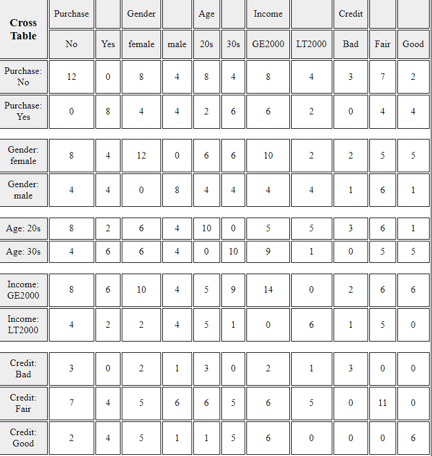
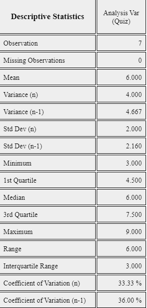
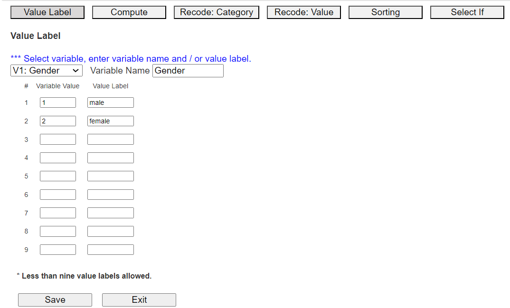
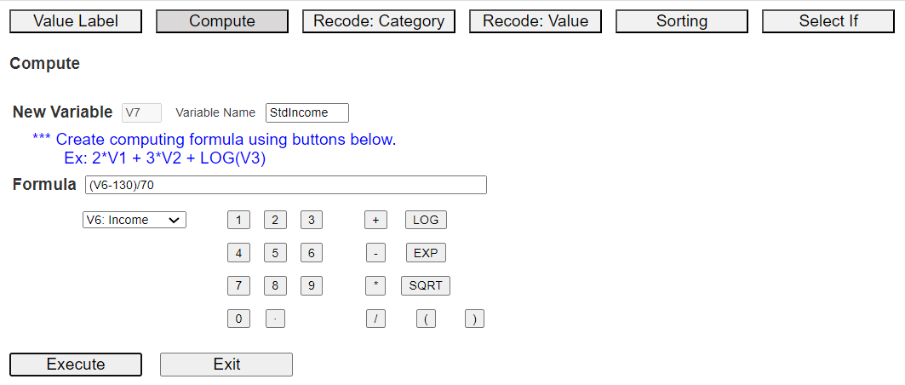
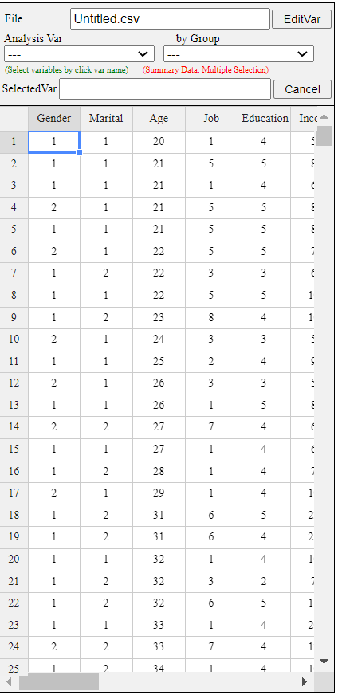
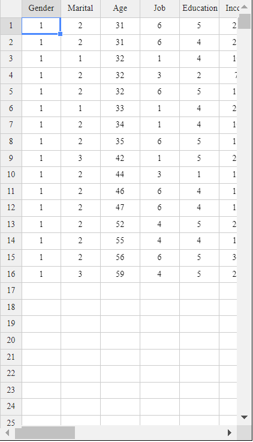

• Summarizing qualitative data and quantitative data using tables in section 3.1.
• Summarizing quantitative variables using measures in section 3.2.
• How to manipulate and transform data in section 3.3.
• How to reduce dimension of data using principal component analysis in Section 3.4.
3.1 Categorica data summary using tables
3.1.1 Frequency table for a single variable
Frequency table for a categorical variable
A frequency table of categorical data summarizes the frequencies of each possible value of categories,
and it is the most commonly used tool for analyzing categorical data.
The frequency table also shows relative frequencies (percents), which are calculated by dividing
the frequency of each category by the number of observations belonging to the category
and cumulative relative frequencies accumulated in the order of the categories. We can draw the bar graph,
pie chart, and band graph in Chapter 2 using this frequency table of categorical data.
Example 3.1.1(Gender Raw Data) In Example 2.1.1, we drew the bar graph of the gender variable in a class using the raw data
as shown in Table 3.1.1. We drew the bar graph using the frequencies of
male and female students. Let's create a frequency table for this raw data of the gender variable using 『eStat』 .
Table 3.1.1 Gender raw data
Gender
male
female
male
female
male
male
male
female
male
female
[Ex] ⇨ DataScience ⇨ Gender.csv.
Answer
We discussed how to enter the gender data of Table 3.1.1 to 『eStat』 as in <Figure 2.1.1>.
If you select the gender variable as the 'Analysis Var' in the variable selection box,
a bar graph of the gender is drawn as in <Figure 3.1.1>. Then, if you click the
Frequency Table icon, ,
the frequency table of the gender variable will appear in the Log Area, as in <Figure 3.1.2>.
This frequency table is used to draw the bar graph or the pie chart.
<Figure 3.1.1> Vertical bar graph of the gender
<Figure 3.1.2> Frequency table of the gender
Practice 3.1.1(Vegetable Preference)
Data that examined gender (1: male, 2: female) and vegetable preference(1: lettuce, 2: spinach, 3: pumpkin, 4: eggplant) of an elementary school class can be found at the following location of 『eStat』.
[Ex] ⇨ DataScience ⇨ VegetablePrefByGender.csv.
By using 『eStat』 , find a frequency table of the vegetable preference.
Frequency table for a quantitative variable
The frequency table can also be used to summarize quantitative data by transforming it into categorical data.
Since the quantitative data can have too many possible values, the values of the data are divided
into several intervals which are not overlapped with each other, and the number of observations
belong to each interval is counted to make a frequency table.
Example 3.1.2(Otter length) Data of 30 otter length can be found at the following location of 『eStat』.
[Ex] ⇨ DataScience ⇨ OtterLength.csv.
Find a frequency table of the otter lengths by using the histogram module of 『eStat』.
Answer
Retrieve the data from 『eStat』 as in <Figure 3.1.3>.
<Figure 3.1.3> Data of Otter Length
Click the Histogram Icon and then select the variable name 'OtterLength' to draw a histogram
as shown in <Figure 3.1.4>.
<Figure 3.1.4> Histogram of the otter length
Click on the [Frequency Table] button in the options window below the histogram (<Figure 3.1.5>).
Then a frequency table of the histogram intervals is shown as in <Figure 3.1.6> in the Log Area.
<Figure 3.1.5> Options of the histogram
<Figure 3.1.6> Frequency table of histogram for otter length
If you want to adjust the histogram intervals from 60kg with an interval length of 5kg,
set ‘Interval Start’ to 60 and ‘Interval Width’ to 5 in the graph options.
Press [Execute New Interval] button to display the adjusted histogram as shown in
<Figure 3.1.7>. Click on [Frequency Table] button to reveal a new frequency
table as in <Figure 3.1.8>.
<Figure 3.1.7> Adjusted histogram of otter length
<Figure 3.1.8> Adjusted frequency table of the otter length
Practice 3.1.2(Age of Library Visitors)
The following data is a survey on the age of 30 people who visited a library in the morning.
Draw an appropriate histogram and its frequency table using 『eStat』.
28 55 26 35 43 47 47 17 35 36 48 47 34 28 43
20 30 53 27 32 34 43 18 38 29 44 67 48 45 43
[Ex] ⇨ DataScience ⇨ LibraryVisitorAge.csv.
3.1.2 Two-dimensional frequecy table for two variables
Two-dimensional frequency table for two categorical variables
If there are two categorical variables, a two-dimensional frequency table, also called
a contingency table or cross table, summarizes the characteristics of two categorical variables
and checks the association between two variables. A two-dimensional table divides a table into
rows and columns to create cells by using possible values of two categorical variables.
Then, the number of observations (frequency) belonging to the corresponding cell is counted.
We can show the percentage of each cell for the sum of rows or the percentage of each cell for the sum of columns
in the table for further analysis. We can also show the percentage of each cell for the total number of data
in the table.
The two-dimensional frequency table is usually made for two qualitative variables data. In the case of
two quantitative variables, We can transform the quantitative data into categorical data using interval
transformation in section 3.3. Then, we can create a cross table for data on two categorical variables.
Let us discuss how to create a contingency table from the raw data of two categorical variables
using the following example.
Example 3.1.2(Survey on Gender and Marital Status)
Table 3.1.2 shows survey data on Gender (1: Male, 2: Female) and Marital Status
(1: Single, 2: Married, 3: Other). Note that the data used the coded values 1, 2 for Gender
and 1, 2, 3 for Marital Status to save storage space. This kind of coding is common in practice.
Create a two-dimensional contingency table of the marital status by Gender using 『eStat』.
Table 3.1.2 Survey data on gender and marital status
Gender
Marital Status
1
1
2
2
1
1
2
1
1
2
1
1
1
1
2
2
1
3
2
1
[Ex] ⇨ DataScience ⇨ MaritalByGender.csv.
Answer
Enter the data of Gender and Marital Status in Table 3.1.2 to the sheet of 『eStat』
as in <Figure 3.1.9>. Use [Edit Var] button to enter a variable name 'Gender'
and value labels 'Male' for 1 and 'Female' for 2. In the same way, enter a variable name
'Marital' and value labels 'Single' for 1, 'Married' for 2 and 'Other' for 3.
The data that were edited for their value labels should be saved in JSON format file
by clicking on the JSON Save icon. If you want to load this file in JSON format,
you must also click on the JSON Open icon to load a file in JSON format.
<Figure 3.1.9> Data input on gender and marital status
Click on the variable name 'Marital' ('Analysis Var'), and then the variable name
'Gender' ('by Group'). Then you will see a bar graph of the marital status by gender
as in <Figure 3.1.10> which is a default graph. Click the Frequency Table icon
to display a two-dimensional table of the marital status by gender in the Log window
as in <Figure 3.1.11>. In this table, the ‘by Group’ variable becomes
the row variable, and the ‘Analysis Var’ becomes the column variable. This contingency table
was used to draw the bar graph of the marital status by gender, as in <Figure 3.1.10>.
<Figure 3.1.10> Bar graph on Marital Status by Gender
<Figure 3.1.11> Contingency table on Marital Status by Gender
Practice 3.1.3(Survey on Gender and Vegetable Preference)
In an elementary school class, a survey on gender (1: male, 2: female) and favorite vegetable (1: lettuce, 2: spinach, 3: pumpkin, 4: eggplant) was conducted. The survey data can be found at the following location of 『eStat』.
[Ex] ⇨ DataScience ⇨ VegetablePrefByGender.csv.
Create a contingency table of the favorite vegetable by gender.
Two-dimensional frequency table for two quantitative variables
If one variable is quantitative and the other variable is categorical, we can make a two-dimensional
frequency table using the histogram module of 『eStat』 as the following
example. We need to divide all possible values of the quantitative variable into
several intervals, as we did when creating a frequency table of a single quantitative variable.
If both variables are quantitative, we need to categorize each quantitative variable by using
the 'Categorize' function of the 'EditVar' button. It will be explained in section 3.3.
Example 3.1.3(Teacher’s Age by Gender)
In a middle school, the age and gender of all teachers are surveyed. The data are saved at the following location of 『eStat』.
[Ex] ⇨ DataScience ⇨ TeacherAgeByGender.csv.
Using the histogram module of 『eStat』 , create a two-dimensional table of Age by Gender.
Answer
Retrieve the data from 『eStat』 as in <Figure 3.1.12> and enter value labels
of 'Gender' as 'Male' for 1 and 'Female' for 2.
<Figure 3.1.12> Data input on gender and age
After clicking the histogram icon, select the ‘Age’ variable as 'Analysis Var', and
then the ‘Gender’ variable as 'by Group'. A histogram will appear as shown in <Figure 3.1.13>.
<Figure 3.1.13> Histogram on age by gender
If you click the button of 'Frequency Table' in the options window below the graph,
<Figure 3.1.14>, a two-dimensional frequency table will appear in the Log window
as shown in <Figure 3.1.15>.
<Figure 3.1.14> Options of the histogram
<Figure 3.1.15> Two-dimensional table of Age by Gender
If the intervals of the histogram in <Figure 3.1.13> are to be readjusted,
for example, from 20 to 10 years apart, set 'Interval Start' to 20 and ‘Interval Width’
to 10 in the graph options and press [Execute New Interval] button. Then, a histogram
with the adjusted intervals appears as in <Figure 3.1.16>. We can obtain a
two-dimensional frequency table with the adjusted intervals
by clicking on [Frequency Table] button as shown in <Figure 3.1.17>.
<Figure 3.1.16> Histogram with adjusted intervals
<Figure 3.1.17> Cross table with adjusted intervals
Practice 3.1.2(Oral Cleanliness by Brushing Methods)
According to the brushing method (1: basic method, 2: rotation method), oral cleanliness scores
are examined and stored at the following location of 『eStat』.
[Ex] ⇨ DataScience ⇨ ToothCleanByBrushMethod.csv.
Create a contingency table of oral cleanliness by brushing method.
3.1.3 Multi-dimensional frequency table for several variables
If there are several categorical variables, we can use a multi-dimensional frequency table
with the bar graph matrix, which we discussed in section 2.1.
If there are \(m\) number of variables, a \(m × m\) matrix of cross tables of each categorical variable,
or we can generate a \(m\)-dimensional frequency table of all categorical variables.
These frequency tables help decide which variable is useful for classification
analysis.
Example 3.1.4 (\(m × m\) matrix of cross tables and \(m\)-dimensional frequency table )
Draw a \(m × m\) matrix of cross tables and a \(m\)-dimensional frequency table
using the five variables in Table 2.1.3, gender, age, income, credit and purhase.
Answer
After loading the data file of Table 2.1.3, /DataScience/PurchaseByCredit20.csv,
click the bar graph matrix icon
.
Click 'Purchase' as 'Group' variable and select 'Gender', 'Age', 'Income', 'Credit'
as 'Analysis Var'. Then the bar graph matrix, as in <Figure 3.1.17> will appear
in the graph window. If you click 'Cross Table Matrix' button below the graph,
the cross table matrix, which corresponds to the bar graph matrix will appear
in the Log table window as in <Figure 3.1.18>. If you click 'Mult-dim Frequency Table'
button, an all possible multi-dimensional frequency table using five variables, 'Purchase',
'Gender', 'Age', 'Income', and 'Credit' will appear in the Log table window
as in <Figure 3.1.19>.
<Figure 3.1.17> Bar graph matrix using the data in Table 2.1.3.

<Figure 3.1.18> Cross table matrix corresponding to the bar graph matrix in <Figure 2.1.16>
<Figure 3.1.19> Multi-dimensional frequency table using five variales in Table 2.1.3
You can practice a multi-dimensional frequency table using 'Bar graph matrix' module in 『eStatU』,
'Ch 2 Bar graph Matrix' as
the following example. You will see a bar graph matrix if you click the [Execute] button.
Click [Cross Table Matrix] to see the graph as in <Figure 3.1.18> and click the
[Multi-dimensional Frequency Table] button to see the graph as in <Figure 3.1.19>.
[Bar Graph Matrix]
3.2 Quantitative data summary using measures
We use frequently the central tendancy and dispersion measures to summarize quantitative data
in case of single variable. We can extend these measures to multivariabe variables.
3.2.1 Measures for a single quantitative variable
Measures of central tendency
We can summarize frequently the quantitative data using measures of central tendency
and measures of dispersion.
A mean, median, and mode are the most frequently used measures of central tendency
to summarize the quantitative data.
The mean or average is the sum of all data values divided by the number of data.
If data \(x_1 ,x_2 ,\cdots, x_N\) are from a population, the mean of this data is referred to
as a population mean and is usually denoted as \(\mu\) in Greek letter.
The calculation formula is defined as follows.
$$
\small \mu = \frac{1}{N} \sum_{i=1}^N x_i
$$
If data \(x_1 ,x_2 ,\cdots,x_n\) are sampled from a population, the mean of this data
is referred to as a sample mean and denoted as \(\small \overline x\)
(read as 'x bar'). then the mean \(\small \overline x\) is defined as follows.
$$
\small \overline x = \frac{1}{n} \sum_{i=1}^n x_i
$$
Note that the population mean and sample mean have the same formula except notation.
Also, note that the mean is heavily influenced by an extreme point where one data value is
far, very large or small, from the data cluster. However, the sample mean has many
good characteristics and is frequently used to estimate the population mean.
A median is the value placed in the middle when data are listed in ascending order
of their values,
and is denoted as \(median\) if data are sampled from a population.
If the number of sample data, \(n\), is an odd number, the median is the data value located at the \({\left( n+1 \above 1pt 2 \right)}^\text{th}\) when data are arranged in ascending order.
If \(n\) is an even number, then the median is the average of the data values located at the \({\left( n \above 1pt 2 \right)}^\text{th}\) and \({\left( n+2 \above 1pt 2 \right)}^\text{th}\).
$$
\begin{align}
median &= \left( \frac{n+1}{2}\right)^\text{th} \text{ data } & \text{if $n$ is odd}\\
&= \frac{ (\frac{n}{2})^\text{th} + \left(\frac{n+2}{2} \right)^\text{th} \text{ data }}{2} & \text{if $n$ is even}
\end{align}
$$
The median is not sensitive even if there is an extreme point in data, so it is often used as a measure of the central tendency when there is an extreme point.
A mode is the most frequently occurring value among data values.
$$
\textit{mode} = \text{the most frequently occurred value among data values}
$$
In the case of quantitative data, since there might be so many possible values, it is not reasonable
to set a mode value as the most frequently occurred data value. In this case, we usually transform
the quantitative data into qualitative data by dividing the data values into several not-overlapped
intervals and counting the frequencies of each interval. The middle value of an interval with
the highest frequency is set to the mode.
Example 3.2.1(Quiz scores)
Quiz scores of seven students in a statistics class are sampled as follows.
5, 6, 3, 7, 9, 4, 8
[Ex] ⇨ DataScience ⇨ QuizScore.csv.
Calculate the mean and median of this data and compare the result with 『eStat』 output.
In order to find the sample median, first arrange the data in ascending order of data values as follows:
3, 4, 5, 6, 7, 8, 9
Since the sample size, 7, is an odd number, the median is \(\small {\left( 7+1 \over 2 \right)}^{th} ~=~4^{th}\) data in the arranged data as above which is 6.
To use 『eStat』, enter the data in column V1 of the sheet as in <Figure 3.2.1>.
Click the Dot Graph icon and click the variable name ‘Quiz’ to see the dot graph of data as
in <Figure 3.2.2>. If you check the option ‘Mean/StdDev’, you can see the location of
the mean, and the interval of the standard deviation.
<Figure 3.2.1> Data input
<Figure 3.2.2> Dot graph with mean and standard deviation.
If you click the Descriptive Statistics icon, a table of all descriptive statistics will result
in the Log Area as shown in <Figure 3.2.3>. It shows the mean, median, and
other statistics such as the standard deviation, minimum, and maximum, etc.

<Figure 3.2.3> Basic statistics of data
You can also use 『eStatU』 to calculate the descriptive statistics and simulate the influence
of extreme points. Select [Box Plot – Descriptive Statistics] from the menu of 『eStatU』 and
enter data. 『eStatU』 calculates all statistics while you are entering data.
If you click the [Execute] button, two sets of dot graphs and box plots appear.
The first graph is for the data you entered, and the second one is for simulation.
On the second bar graph, you can click a point (circle) using your mouse
and move to the other far side location of the axis (make an extreme point) to check its influence
on the mean and median. You can see that the mean is changed a lot by the extreme point,
but the median is not altered by the extreme point.
Practice 3.2.1(Otter Length)
The lengths of 30 otters are measured (in cm), and the data are saved at the following location of 『eStat』.
1) Use 『eStat』 to obtain the mean, median, minimum and maximum of this data.
2) Copy this data to 『eStatU』 and draw a dot graph and a box plot. Simulate the influence of an outlier.
Example 3.2.2(Library Visitor)
If a frequency table of visitors’ age in a library is as shown in Table 3.2.1, find the mode of the age based on this frequency table.
Table 3.2.1 Frequency table of visitor's age in a libray
Age Interval
Frequency
[20.00, 30.00)
2 ( 6.7%)
[30.00, 40.00)
7 (23.3%)
[40.00, 50.00)
7 (23.3%)
[50.00, 60.00)
9 (30.0%)
[60.00, 70.00)
3 (10.0%)
[70.00, 80.00)
2 ( 6.7%)
Total
30 (100%)
Answer
The interval [50.00, 60.00) has the highest frequency, 9, and the median is the mid value
of the interval [50.00, 60.00), which is 55.
There are several variants to compensate for the disadvantage of the mean, one of which
is a trimmed mean. We list the data in ascending order and then average the data
except for a fixed number of large and small values to eliminate the extremes.
The trimmed mean is often used to prevent
biased judging by referees in sports, such as gymnastics and figure skating at the Olympics.
You may remove the top few percent data instead of the maximum and the bottom few percent data
instead of the minimum.
Another variant is a weighted mean in which each measurement is multiplied
by a constant weight to obtain the mean. The grade point average for college students,
which uses the weights of credit hours, is an example of the weighted mean.
The price index. which uses the weights of the total amount of sales
of the goods, is another example of the weighted mean.
If \( x_{1} ,x_{2}, \dots , x_{n} \) are the data values and their weights are \( w_{1} , w_{2} ,\dots , w_{n} \),
then the weighted mean is defined as the following.
\[
\text{Weighted Mean} ~=~ { {w_{1} x_{1} +w_{2} x_{2} + \cdots + w_{n} x_{n}} \over {w_{1} + w_{2} + \cdots + w_{n}} } ~=~ { {\sum _{i=1} ^{n} w_{i} x_{i}} \over {\sum _{i=1} ^{n} w_{i}} }
\]
Example 3.2.3(Olympic Gymnastics Game)
Eight referees in an Olympic gymnastics Game judged a player as follows:
9.0 9.5 9.3 7.2 10.0 9.1 9.4 9.0
Find the mean and median of this data. Also, find the trimmed mean, which excludes the minimum
and the maximum. Compare both results.
Answer
This data is not a sample but a population of eight. The mean is as follows.
Since the number of data is \( \small N\) = 8 which is an even number, the median is the average of the 4th and the 5th data in the ordered list as follows:
7.2 9.0 9.0 9.1 9.3 9.4 9.5 10.0
Therefore, the median is the average of 9.1 and 9.3, which is 9.2.
The trimmed mean is the average of the remaining numbers, except the minimum of 7.2 and the maximum of 10.0.
In this data, the median or the trimmed mean is more representative of the data than the arithmetic mean.
Example 3.2.4(Weighted Mean)
A student took three courses in History (two credits), Math (four credits), and English (three credits)
last semester. He got an A in History, a B in math, and a C in English. Calculate the mean and the weighted mean with the number of credits if A is rated 4 points, B is 3 points, and C is 2 points.
The weighted mean is less than the mean because although the grade in History,
which has two credits, was A, the grade in English, which has three credits,
was relatively poor, C.
Measures of dispersion
In a gymnastics competition, four judges scored 3, 4, 6, and 7 points for player A and 2, 4, 6,
and 8 points for player B. Both players have the same mean of 5, but player B has a large deviation in the scores compared to player A. The degree of data dispersion
is calculated using a numerical value, called a measure of dispersion, to compare two data sets.
The most commonly used measure of dispersion is a variance (or standard deviation). Other measures
include a mean absolute deviation, range, and interquartile range.
A variance is an average of all squared distances from each data to the mean. Therefore, if data are
spread widely around their mean, the variance will be large, and if data are concentrated around
the mean, the variance will be small. A population variance is denoted as \(\sigma^2\), and a
sample variance is denoted as \(s^2\). Formulas to calculate the population variance and the sample
variance are slightly different as follows.
$$\small
\begin{align}
&\text{Population variance} &\quad \sigma^{2} ~&=~ { {1 \over N} {\sum _{i=1} ^{N} (x_{i} - \mu )^{2}} } ~~~~ (N:~number~ of~ population~ data) \\
&\text{Sample variance} &\quad s^{2} ~&=~ { { 1 \over {n-1} }{\sum _{i=1} ^{n} (x_{i} - {\overline x } ) ^{2}} } ~~~~ (n:~ number~ of~ sample~ data)
\end{align}
$$
There is an important reason for using \(n-1\) instead of \(n\) when calculating the sample variance,
which will be discussed in section 4.4, sampling distribution and estimation.
The meaning of the population variance, which is an average of all
squared distances from each data to the population mean, is illustrated in <Figure 3.2.4>.
In this Figure, a dot mark represents each data value. \(\sigma^2\) = 2.5 is calculated as the sum of
squared distances, 10, divided by the number of data, \(n\) = 4 in this example.
<Figure 3.2.4> Calculation of a population variance
A standard deviation is defined as the square root of the variance. A population standard deviation
is denoted as \(\sigma\), and a sample standard deviation is denoted as \(\s\). The variance is not
easy to interpret because it is an average of the squared distances. However, since the standard
deviation is the square root of the variance, it is interpreted as an average distance from each
data value to the mean.
$$
\begin{align}
\sigma &=~ \sqrt {\sigma^2} \\
s &=~ \sqrt {s^2}
\end{align}
$$
Example 3.2.5(Quiz scores)
In Example 3.2.1, the mean of the following sample data was 6.
5, 6, 3, 7, 9, 4 and 8
Calculate a sample variance and a sample standard deviation of this data.
These values coincide with the output of 『eStat』 in <Figure 3.2.3> and the output of 『eStatU』.
When there are more than two quantitative variables and units of data measurement are different
from each other, comparing their standard deviations is meaningless. In this case, a coefficient of variation which is a division of the standard deviation by the mean, is used to compare several variables. The coefficient of variation is usually calculated as a percent value of the standard deviation to its mean.
$$\small
\begin{align}
&\text{Population coefficient of variation} &C = \frac{\sigma}{\mu} \times 100 \quad \text{(unit %)} \\
&\text{Sample coefficient of variation} &c = \frac {s} {\overline {x}} \times 100 \quad \text {(unit %)}
\end{align}
$$
Example 3.2.6(Sales data)
A company's average weekly sales was 1.36 billion dollars, and its standard deviation
was 0.28 billion dollars. If the same data were made in monthly sales, the average
was 5.44 billion dollars, and its standard deviation was 0.5 billion dollars.
Calculate a coefficient of variation for each case and compare.
Answer
The coefficient of variation in weekly sales is as follows.
Therefore, we can see that the variation in monthly sales is smaller than the variation in weekly sales.
A range is the difference between the maximum and the minimum value of data.
The range is easy to calculate, but it is not a good measure of dispersion
if extreme points exist.
$$
\text{range = maximum - minimum}
$$
A \(p\)-percentile implies roughly the percent data when data are arranged in ascending order from small to large.
$$
p\text{-percentile} = p\%~ \text{of observations} \le \text{to this value and} ~(100-p)\% ~\ge~ \text{this value.}
$$
Note that if the data size is small, a single observation may fall into several percentiles according to this definition.
An interquartile range is a measure to complement the disadvantage of the range. The 25 percentile of the data is called the 1st quartile (Q1), the 50 percentile is called the 2nd quartile (Q2) or median, and the 75 percentile is called the 3rd quartile (Q3). The interquartile range (IQR) is the range between the 3rd quartile and the 1st quartile.
$$
\text{interquartile range (IQR) = Q3 - Q1 }
$$
One simple way to calculate Q1 and Q3 is to arrange the data in ascending order
and divide it into two pieces with an equal number of data.
If there is an odd number of data points, we add the median to the data,
making the number of data points even. Q1 is the median of the first half of the data,
and Q3 is the median of the second point.
Example 3.2.7
If you have data 5, 3, 7, 9, find a range and an interquartile range.
Answer
The maximum of the data is 9, and the minimum is 3. Therefore, range is as follows.
To calculate quartiles, since the number of data is even, we divide data into two pieces as follows:
3, 5
7, 9
The first quartile Q1 is the median of {3, 5}, which is Q1 = 4. The third quartile Q3 is
the median of {7. 9}, which is Q3 = 8. So, the interquartile range IQR is as follows.
Example 3.2.8
Using the data of Example 3.2.1 which are as follows, calculate a range and an interquartile range and compare it with the output of 『eStat』.
5, 6, 3, 7, 9, 4, 8
Answer
The maximum of the data is 9 and the minimum is 3. Therefore, the range is as follows.
In order to find quartiles of data, first arrange the data in ascending order as follows.
3, 4, 5, 6, 7, 8, 9
The median of the data is the data value of \( ({{7+1} \over 2})^\text{th} ~=~4^\text{th} \) which is 6.
In order to calculate the quartiles, since the number of data is odd, we insert the median
into the data, and divide the data into two pieces as follows.
3, 4, 5, 6
6, 7, 8, 9
The first quartile Q1 is the median of {3, 4, 5, 6} which is Q1 = 4.5. The third quartile Q3 is the median of [6, 7. 8, 9] which is Q3 = 7.5.
So, the interquartile range IQR is as follows.
These values of Q1, Q3 and IQR coincide with the output of 『eStat』 in <Figure 3.2.3>,
and the output of 『eStatU』.
A box plot is a graph to show the minimum, the 1st quartile, the median, the 3rd quartile, and the maximum of the data simultaneously that has been used recently.
The box plot first marks the 1st quartile (Q1) and the 3rd quartile (Q3) at a horizontal line and connects with a square box. Then displays the median (Q2) at the location proportional to Q1 and Q3 in the box and connects the box with the minimum and the maximum.
Also, draw a vertical line at (minimum - 1.5 IQR) and at (maximum + 1.5 IQR) as in <Figure 3.2.3>. Using the box plot, you can check the symmetry of the data, the central location of data (median), and the degree of dispersion (IQR).
Data that are less than the line (minimum - 1.5 IQR) or greater than (maximum + 1.5 IQR) are considered extremes (marked * in <Figure 3.2.5>).
Some statistical packages display the left line, which is to check an extreme point,
as Max(minimum, Q1 - 1.5 IQR) and the right line as Min( maximum, Q3 + 1.5 IQR).
<Figure 3.2.5> box plot
Example 3.2.9
Using the following data, draw a dot plot and a box plot using 『eStatU』.
5, 6, 3, 7, 9, 4, 15
Answer
Using the menu [Box Plot – Descriptive Statistics] in 『eStatU』 , if you enter the data and click the [Execute] button, the dot plot and the box plot appear as in <Figure 3.2.6>.
Example 3.2.10(Ages of teachers by gender)
In a middle school, the ages of all teachers with their gender were surveyed,
and the data can be found at the following location of 『eStat』.
[Ex] ⇨ DataScience ⇨ TeacherAgeByGender.csv
1) Draw a box plot of the age using 『eStat』 and examine a median, a range,
a quartile, and an interquartile range.
2) Draw a box plot of the age by gender using 『eStat』 and compare medians,
ranges, quartiles, and IQRs by gender.
Answer
1) After loading the data to 『eStat』 , enter the value labels of ‘Gender’ as ‘Male’ for 1
and ‘Female’ for 2 using [EditVar] button. Click on the box plot icon and then 'Age' variable,
then the horizontal box plot appears as in <Figure 3.2.7>. If you select ‘Vertical’
from the options below the graph, the vertical box plot shown as in <Figure 3.2.8> appears.
Based on this box plot, we can see that the upper half of the data is more scattered than the lower half
of data, which implies there are more aged teachers.
<Figure 3.2.7> Horizontal box plot of age variable
<Figure 3.2.8> Vertical box plot of age variable
If you click button of [Descriptive Statistics] in the options, the basic statistics of the age is displayed as shown in <Figure 3.2.9>.
<Figure 3.2.9> Descriptive statistics of age variable
2) If you click on 'Gender' after 'Age' variable, the horizontal box plot by gender appears as shown
in <Figure 3.2.10>. If you select ‘Vertical’ from the options below the graph, the vertical
box plot by gender appears as shown in <Figure 3.2.11>. You can observe that the dispersion
of female teachers' ages is greater than that of male teachers’.
<Figure 3.2.10> Horizontal box plot of age by gender
<Figure 3.2.11> Vertical box plot of age by gender
If you click the button of [Basic Statistics] in the options, the basic statistics of the age by gender is displayed in the Log Area as in <Figure 3.2.12>.
<Figure 3.2.12> Descriptive statistics of age by gender
Practice 3.2.2(Effect of Vitamin C on Tooth Growth in Guinea Pigs)
We examined the effect of Vitamin C on tooth growth in Guinea Pigs. The response is
the length of odontoblasts (cells responsible for tooth growth) in 60 guinea pigs.
Each animal received one of three dose levels of vitamin C (0.5, 1, and 2 mg/day)
by one of two delivery methods: orange juice or ascorbic acid (a form of vitamin C coded as VC).
Data can be found at the following location of 『eStat』.
[Ex] ⇨ DataScience ⇨ ToothGrowth.csv
Data format:
V1
length
numeric
Tooth length
V2
supp
factor
Supplement type (VC or OJ).
V3
dose
numeric
Dose in milligrams/day
1) Draw a box plot of the length using 『eStat』 and find the median, the range,
the quartiles, and the IQR. Analyze the graph and the basic statistics.
2) Draw a box plot of the length by the supplement using 『eStat』,
and find the median, the range, the quartiles, and the IQR by the supplement. Analyze the graphs and the basic statistics.
3) Draw a box plot of the length by the dose using 『eStat』,
and find the median, the range, the quartiles, and the IQR by the dose. Analyze the graphs
and the basic statistics.
3.2.2 Measures for several quantitative variables
Two quantitative variables
Suppose there are two quantitative variables denoted as \(X\) and \(Y\) with
means \(\mu_X\), \(\mu_Y\), and variances \(\sigma_X^2 , \sigma_Y^2 \) respectively.
Suppose \(n\) number of sample data of each variable are observed and denoted as
\( (x_1 , y_1 ), (x_2 , y_2 ), ... , (x_n , y_n ) \).
We observe the data using a scatter plot where each data is considered as points in a two-dimensional X-Y plane,
Means of the data, \( (\overline{x}, \overline{y} ) \), are the center of the data in the plane.
Sample variances, \(s_x^2\) and \(s_y^2 \) are measures of dispersion in each variable.
Since data can be scattered around the X-Y plane, which implies two variables are not related
or can be concentrated around a line, which implies two variables have a strong relation,
a covariance measure, \(\sigma_{XY}\) in case of population, is used to measure a relation
between two variables. The sample covariance, \( s_{xy}\), is defined by the following formula.
$$
s_{xy} ~ =~ \frac{1}{n-1} \sum _{i=1} ^{n} (x_{i} - \overline x ) (y_{i} - \overline y )
$$
The covariance implies the total average of the values obtained by multiplying the
x-axis distance and the y-axis distance from each data point to the data mean point
\( (\overline{x}, \overline{y} ) \) in the X-Y plane. Therefore, if many points are on the upper right and lower left of
the mean point, the covariance has a positive value, indicating a positive correlation.
If many points are on the upper left and lower right of the mean point,
the covariance has a negative value, indicating a negative correlation. However,
since covariance can increase in value depending on the unit of data, the
correlation coefficient, denoted as \(\rho_{XY}\) in case of population, is used as a measure of relation and
defined as follows.
$$
\rho_{XY} ~=~ \frac {\sigma_{XY}}{\sigma_X \sigma_Y }
$$
The sample correlation coefficient, \( s_{xy} \) is defined as follows.
$$
r_{xy} ~=~ \frac{s_{xy}}{s_x s_y} ~=~ \frac {\sum _{i=1} ^{n} (x_{i} - \overline{x} )(y_{i} - \overline{y} )} {\sqrt {\sum _{i=1} ^{n} (x_{i} - \overline{x} ) ^{2} \sum _{i=1} ^{n} (y_{i} - \overline{y} ) ^{2}}}
$$
The correlation coefficient is a variation of the covariance and can only have
values between -1 and +1. When the correlation coefficient is close to +1,
the two variables are said to have a strong positive correlation. When the
correlation coefficient is close to -1, the two variables are said to have a strong negative correlation.
When the correlation coefficient is close to 0, there is no correlation between
the two variables.
The characteristics of the correlation coefficient are as follows.
1) \(\rho_{XY}\) has a value between -1 and +1, and
the closer the value of \(\rho_{XY}\) is to +1,
the stronger the positive linear relationship is, and the closer it is to -1,
the stronger the negative correlation is, and the closer the value of \(\rho_{XY}\) is to 0,
the weaker the linear relationship is.
2) If all data are located on a straight line, the value of \(\rho_{XY}\) has a value of
1 (if the slope of the straight line is positive) or -1 (if the slope of the straight line is negative).
3) \(\rho_{XY}\) is a measure that only indicates the linear relationship
between two variables. Therefore, in the case of \(\rho_{XY}\) = 0, the two variables
have no linear correlation, but they can have other relationships.
Example 3.2.11
Based on the survey of advertising costs and sales for 10 companies that make the same product,
we obtained the following data, as in Table 3.2.2.
Find the sample covariance and correlation coefficient for the advertising costs and sales.
Table 3.2.2 Advertising costs and sales (unit: 1 million USD)
Company
Advertise (x)
Sales (y)
1
4
39
2
6
42
3
6
45
4
8
47
5
8
50
6
9
50
7
9
52
8
10
55
9
12
57
10
12
60
[Ex] ⇨ DataScience ⇨ SalesByAdvertise.csv.
Answer
It is convenient to make the following table to calculate the sample covariance
and correlation coefficient.
We can also use this table for calculations in regression analysis.
Table 3.2.3 A table for calculating the covariance
Number
\(x\)
\(y\)
\(x^2\)
\(y^2\)
\(xy\)
1
4
39
16
1521
156
2
6
42
36
1764
252
3
6
45
36
2025
270
4
8
47
64
2209
376
5
8
50
64
2500
400
6
9
50
81
2500
450
7
9
52
81
2704
468
8
10
55
100
3025
550
9
12
57
144
3249
684
10
12
60
144
3600
720
Sum
64
497
766
25097
4326
Mean
8.4
49.7
The number of data \(n\) = 10, and the terms that are necessary to calculate the covariance
and correlation coefficient are as follows:
\(\small SXX, SYY, SXY \)represent the sum of squares of \(\small x_{i}\), the sum of squares of
\(\small y_{i}\), the sum of squares of \(\small x_{i}, y_{i}\). Hence, the sample covariance and
correlation coefficient are as follows:
\(\small \quad s_{xy} = \frac{1}{n-1} \sum_{i=1}^{n} (x_i - \overline x )(y_i - \overline y ) = \frac{151.2}{10-1} = 16.8 \)
\(\small \quad r = \frac {\sum_{i=1}^{n} (x_i - \overline x )(y_i - \overline y )} { \sqrt{\sum_{i=1}^{n} (x_i - \overline x )^{2} \sum_{i=1}^{n} (y_i - \overline y )^{2} } } = \frac{151.2} { \sqrt{ 60.4 × 396.1 } } = 0.978 \)
This value of the correlation coefficient is consistent with the scatter plot which shows a strong positive
correlation of the two variables.
[]
Several quantitative variables
Suppose there are \(m\) quantitative variables denoted as \(X_1 , X_2 , ... , X_m \) with
a mean vector
$$
\left [ \matrix {\mu_1 \cr \mu_2 \cr ... \cr \mu_m } \right ]
$$
and a \(m \times m \) variance-covariance matrix as follows.
$$
\left [ \matrix {\sigma_{1}^2 & \sigma_{12} & ... & \sigma_{1m} \cr
\sigma_{21} & \sigma_{2}^2 & ... & \sigma_{2m} \cr
... & ... & ... & ... \cr
\sigma_{m1} & \sigma_{m2} & ... & \sigma_{m}^2 }
\right ]
$$
Suppose \(n\) number of sample data of each variable are observed and denoted as \(n \times m \) matrix as follows.
$$
\left [ \matrix {x_{11} & x_{12} & ... & x_{1m} \cr
x_{21} & x_{22} & ... & x_{2m} \cr
... & ... & ... & ... \cr
x_{n1} & x_{m2} & ... & x_{mm} }
\right ]
$$
We usually observe the data using a scatter plot matrix. The sample mean vector is
$$
\overline {\boldsymbol x} = \left [ \matrix {\overline x_1 \;\; \overline x_2 \;\; ... \;\; \overline x_m } \right ]
$$
and the \(m \times m \) sample variance-covariance matrix \(S\) is as follows.
$$
S = \left [
\matrix {s_{1}^2 & s_{12} & ... & s_{1m} \cr
s_{21} & s_{2}^2 & ... & s_{2m} \cr
... & ... & ... & ... \cr
s_{m1} & s_{m2} & ... & s_{m}^2 }
\right ]
$$
Note that the sample variance-covariance matrix \(S\) is symmetric. The sample correlation matrix \(R\) is denoted
as follows.
$$
R = \left [
\matrix {1 & r_{12} & ... & r_{1m} \cr
r_{21} & 1 & ... & r_{2m} \cr
... & ... & ... & ... \cr
r_{m1} & r_{m2} & ... & 1 }
\right ]
$$
Example 3.2.12
Consider the iris data saved in 『eStat』 system at Ex -> /DataScience/Iris150.csv.
Use Species as a group variable and the other four variables as analysis variables. Draw a scatter plot matrix
and find the sample mean vector, sample variance-covariance matrix, and sample correlation coefficient for each group
and total data.
Answer
You can easily find all statistics using the below 'Scatter Plot Matrix] module in 『eStatU』.
After you enter 'Species' data to Y variable and other data to X1, X2,
X3, X4 variables, click [Execute] button.
Then, the scatter plot matrix will appear in the graph window.
If you click [Multivariate Stat] button below the graph,
then basic statistics, covariances and correlations on four quantitative variables of each group and total data
will appear in the table window.
Data of a single variable, a column in the data set, can be explored using figures,
tables, or statistical measures
to see the overall shape or structure, as discussed in the previous sections.
Another way to explore is to examine the similarity or dissimilarity
between data of observation (a row in the data set) to see which observations are similar.
Clustering analysis in Chapter 8 is a method of clustering similar data
based on the similarity/dissimilarity of observations.
Suppose there are two observations \(\boldsymbol x = (x_1 , x_2 , ... , x_m )\) and
\(\boldsymbol y = (y_1 , y_2 , ... , y_m )\)
which have \(m\) variables. Since the dissimilarity measure is a kind of distance,
it is usually denoted as \(d(\boldsymbol x , \boldsymbol y)\).
The covariance or correlation coefficient in the previous section is
a distance measure between data of variables (column).
Commonly used distance measures between data of observations (rows) are summarized in Table 3.2.4
according to the data type. A simple match coefficient for the qualitative data is used
to validate the accuracy of a classification model.
Table 3.2.4 Distance measures between data of observations
Simple match coefficient
\(f_{00}\) : number of variables such as \(x_j = 0\) and \(y_j = 0 \)
\(f_{01}\) : number of variables such as \(x_j = 0\) and \(y_j = 1 \)
\(f_{10}\) : number of variables such as \(x_j = 1\) and \(y_j = 0 \)
\(f_{11}\) : number of variables such as \(x_j = 1\) and \(y_j = 1 \)
if \(r\) = 1, it is called \(L_1 \) distance.
\(
d(\boldsymbol x , \boldsymbol y) = \sum _{j=1} ^{m} |x_{j} - y_{j} |
\)
Manhattan distance or city block distance
if \(r\) = 2, it is called \(L_2 \) distance.
\(
d(\boldsymbol x , \boldsymbol y) = \left ( \sum _{j=1} ^{m} |x_{j} - y_{j} | ^{2} \right ) ^{1/2}
\)
Euclid distance
if \(r\) = ∞, it is called \(L_∞ \) distance.
\(
d(\boldsymbol x , \boldsymbol y) = max _{j=1} ^{m} |x_{j} - y_{j} |
\)
Maximum distance
If there are \(n\) number of observations \( {\boldsymbol x}_1 , {\boldsymbol x}_2 , ... , {\boldsymbol x}_n \)
for each of \(m\) variables, all distances between \(n\) number of observations can be expressed
as a \(n \times n \) matrix \(D\) as follows. Here, \(d_{ij} \) is the distance
\(d({\boldsymbol x}_{i} , {\boldsymbol x}_{j} )\) between \(i^{th}\) observation
and \(j^{th} \) observation.
$$
D = \left [
\matrix {d_{11} & d_{12} & ... & d_{1n} \cr
d_{21} & d_{22} & ... & d_{2n} \cr
... & ... & ... & ... \cr
d_{n1} & d_{n2} & ... & d_{nn} }
\right ]
$$
『eStatU』 provides a module to calculate a distance matrix using the square of Euclid distance
or Manhattan distance as following example.
Example 3.2.13
Consider 30 observations of the iris data saved in 『eStat』 system at Ex -> /DataScience/Iris30.csv.
Find a distance matrix using the square of Euclid distance with four variables,
Sepal.Length, Sepal.Width, Petal.Length, and Petal.Width.
Answer
You can easily find a distance matrix using the below 'Similarity Measure] module in 『eStatU』.
After you enter data of four variables to X1, X2,
X3, X4
[Similarity Measure]
3.3 Data manipulation and transformation
It is sometimes necessary to refine data suitable for applying a specific data analysis
technique called preprocessing.
The preprocessing can be data manipulation
or data transformation. 『eStat』 has various data manipulation and transformation functions
like Excel or other statistical packages.
Let us practice data manipulation and transformation using the file in <Figure 3.3.1>.
The data is stored at the following location of 『eStat』.
[Ex] > DataScience > Survey.csv.
This data comprises 40 observations (rows) and 6 variables (columns). Data of categorical variables
such as Gender, Marital Status, Job, and Education level are coded using numbers, and the meaning
of each coded value are as follows:
V1 Gender 1:Men, 2:Female
V2 Marital Status 1: single, 2: married, 3: other
V3 Age
V4 Job 1: Office worker, 2: Civil servant, 3: Labor worker, 4: Politician, 5: Student,
6: Entrepreneur, 7: Housewife, 8: Other
V5 Education Level 1: No Education, 2: Elementary, 3: Middle School, 4: High School, 5: University
V6 Income
<Figure 3.3.1> Survey.csv Data
Assigning value label to the coded data
The Gender data in <Figure 3.3.1> have coded values, such as 1 for male 2 for female,
and the coded data are frequently
used to process the data with less storage space using a statistical package.
In this case, we need to assign variable names and value labels to have an understandable final result.
In 『eStat』, if you click the [EditVar] button on the sheet,
a dialog box for [Value Label], as shown in <Figure 3.3.2> appears.
 <Figure 3.3.2> [EditVar] dialog box
On the screen, 'V1: Gender' is selected, and value labels 1 and 2 are displayed. On the right side of the screen,
input 'male' and 'female' as the name of the value label. Select another categorical variable,
and enter the variable name and value labels similarly. We can enter value labels up to 9 categories
of a variable.
After the input is finished, press the [Save] button and then the [Exit] button. The system memorizes the value labels,
but you have to save it in json format using the icon
and you have to use the json load using the icon
when you open the saved file.
Mathematical transformation
In the case of continuous data, a transformation using a mathematical function is used to use
some data analysis models. For example, a neural network model uses a mathematical transformation
such as [0-1] transformation or standardization to make the units of several variables the same
when they are different. [0-1] transformation is to transform the value of a variable to a value
between 0 and 1. If \(x\) is the value of a variable, \(min\) is the minimum value of the variable
and \(max\) is the maximum value of the variable, [0-1] transformation, \(y\), of \(x\)
means the relative position between the minimum and maximum values of the variable.
$$
[0-1] \text{ transformation:} \quad y = \frac {x - min}{max - min}
$$
Standardization is to transform the original data into data with a mean of 0 and a variance of 1.
If \(x\) is the value of a variable, \(\mu\) is the mean of the variable
and \(\sigma\) is the standard deviation of the variable, a standardized variable \(z\) is to subtracts the mean
from each data and divide it by the variable's standard deviation as follows.
$$
\text{Standardization:} \quad z = \frac {x - \mu}{\sigma}
$$
Models for data analysis often make statistical assumptions, which may not be satisfied by the data.
In such cases, exponential transformation(\(exp(x)\)), log transformation(\(exp(x)\)),
reciprocal transformation(\(exp(x)\)), square root transformation(\(exp(x)\)), or
Box-Cox transformation of data is frequently used.
$$
\text{Box-Cox transformation:} \quad \Big[ \; \matrix { \frac {x^p - 1}{p} , \,\, \text{if} \,\, p \ne\ 0 \cr
log(x), \,\, \text{if} \,\, p = 0 }
$$
The mathematical transformation mentioned above can be done by using Compute module in 『eStat』.
In 『eStat』, click the [EditVar] button on the sheet and then click [Compute] in the menu
to display a dialog box like <Figure 3.3.3>.
 <Figure 3.3.3> Compute dialog box
Suppose the population mean of Income is 130, and its standard deviation is 70.
The Standardized Income, called StdIncome, can be calculated by creating a
formula (V6-130)/70 using the buttons on variables, numbers, arithmetic operators (+, -, *, /),
and parenthesis. You can use buttons of LOG, EXP, SQRT functions on the Compute dialog box
to make a new variable for other mathematical transformations. Give a new name to the
newly created variable, such as 'StdIncome', and then click [Execute] button.
The newly created data is automatically placed on the far right of the sheet, as <Figure 3.3.4>.
In this example, there are currently 6 variables, so a new computed variable is created in V7,
as shown in <Figure 3.3.4>.
<Figure 3.3.4> Newly computed standardized data of Income
Categorization
There are some models, such as Decision Tree, that can be applied to only categorical variables.
In such cases, we must convert the continuous variables into categorical variables,
and it is called a [categorization].
One common example of categorization is converting an age variable into categorical data such as 10s, 20s, etc.
When converting continuous data into categorical data, the most important question is
‘how many categories should we divide them into?’. Analysis may be difficult if the number of categories
is too small or too large. Usually, the analyst determines the number of categories
after examining the data distribution. There are two methods: one is to divide
the category intervals into equal intervals (equal width) and the other is to divide
them into equal frequencies (equal frequency). In addition, you can consider a method of
first dividing the number of intervals into many and then merging them one by one with adjacent intervals.
A decision tree model applies statistical methods to divide intervals using uncertainty measures
such as the entropy coefficient.
Categorization of continuous data can be easily done using [Recode: Category] module
in [EditVar] of 『eStat』 as follows.
Suppose we want to create a new categorical variable for Age. In 『eStat』, click the [EditVar] button on the sheet
and click [Recode: Category] in the menu, then a dialog box like <Figure 3.3.5> appears.
Enter a new variable name, e.g., 'AgeCategory', and select the variable to categorize, 'V3: Age'.
Then, the minimum 20 and maximum 59 of Age data are shown on the right-hand side for your information.
If you decide to use 20 for the 'Interval Start' and 10 for the 'Interval Width', enter these values
and click the [Category List Check] button to view the intervals of new categorical variables.
as in <Figure 3.3.5>.
<Figure 3.3.5> Dialogue box of 'Recode: Category' module
The newly created data of the categorized variable, AgeCategory, is automatically placed on the far right of the sheet.
In this example, there were 7 variables, so new categorized variable is located at V8
as shown in <Figure 3.3.6>.
<Figure 3.3.6> New created data of 'AgeCategory'
Recoding a value of the variable
Sometimes, we need to change the value of the variable. For example, we found the frequency of
Entrepreneur of Job variable in Survey.csv data, and we want to merge it into another category,
it is called a recoding value. This kind of recoding value can be easily done
using Recode: Value module in [EditVar] of 『eStat』 as follows.
In 『eStat』, click the [EditVar] button on the sheet and then click [Recode: Value] in the menu
to display a dialog box like <Figure 3.3.7>.
Enter a new variable name, e.g., 'JobNew', and select the variable to rename the value, 'V4: Job'.
Then, the current eight Job values are shown in the 'Current Value' column.
Since the value of Entrepreneur is 6 now, we will change 6 to 8, which is Other category,
and values of the other categories stay the same as <Figure 3.3.7>.
<Figure 3.3.7> Recode: Value dialog box
If you click the [Execute] button, the newly recoded variable is automatically placed on the far right of the sheet.
There are currently 8 variables in this example, so a new variable is created in V9, as shown in <Figure 3.3.8>.
<Figure 3.3.8> Recoded value data
Sorting
Sorting arranges the data set in ascending or descending order of one variable,
called a key variable. It is a standard data processing in many databases and statistical packages.
The sorting can be easily done using [Sorting] module in [EditVar] of 『eStat』,
which allows up to 3 key variables.
Let us practice sorting using the survey.csv data with age as a key variable.
In 『eStat』, click the [EditVar] button on the sheet and then click [Sorting] in the popup menu
to display a dialog box like <Figure 3.3.9>.
<Figure 3.3.9> Sorting dialog box
Select the first 'Sorting Variable' as Age, and 'Sorting Method' as 'Ascending',
and click the [Execute] button to display the sorted data on the sheet.
You can select up to three sorting key variables. After the first variable sorts the data,
the second variable is sorted, and again, the first and second variables are sorted,
and the third variable is sorted within sorted.
Data sorted in ascending order of Age is shown in <Figure 3.3.10>.
 <Figure 3.3.10> Data sorted in ascending order of age
Conditional selection of data: Select If
Sometimes, we need to select data that satisfy only certain conditions, called
a conditional selection. For example, we need to analyze data that are male and
age greater than or equal to 30. This kind of conditional selection can be easily done
using [Select If] module in [EditVar] of 『eStat』 as the following example.
『eStat』 allows up to three conditions.
In 『eStat』, click the [EditVar] button on the sheet and click [Select If] from the menu,
then a dialog box like <Figure 3.3.11> appears.
<Figure 3.3.11> 'Select If' dialog box
Select a variable, select a relational operator (=, <, ≤, >, ≥, ≠), and enter a value
to complete the conditional expression.
You can create conditional expressions for up to three variables. Here, select male
in 'V1: Gender' and '30 years or older in V3: Age'.
After creating the conditional expression, click the [Execute] button.
The data selected for males, and over 30 years of age are shown in <Figure 3.3.12>.
 <Figure 3.3.12> Data selected for male and over 30 years of age
3.4 Dimension reduction: Principal component analysis
Recent data in data analysis can be so large that data processing takes a long time.
When applying a model, the number of variables is too large to apply to the model.
In such cases, you can consider a reduction of data size by sampling an appropriate number of data or
discarding unnecessary variables or using principal component analysis to reduce the number of variables.
Reducing data size using sampling
When an entire population is unknown, the characteristics of the population are studied using samples
in inferential statistics. If the data used in data analysis is too big to handle, we can collect some samples of the big data to reduce the time and cost of data processing. In addition, sampling can also be applicable
for exploratory data analysis by extracting only some data to identify the characteristics of the entire data.
A suitable sampling method in big data analysis is to extract a sample that sufficiently represents
the whole data and has similar characteristics. There are various sampling methods, but only
two basic ones are widely used in big data analysis.
Simple random sampling extracts a sample so that all data in the whole data set have
the same probability of being selected as a sample. Both with replacement sampling
and without replacement sampling can be applied, but in reality, almost all sampling is done without replacement.
We can use a random number table to ensure that each data in the population has the same probability of being selected as a sample. A random number table is a table in which numbers from 0 to 9
are scattered without regularity or bias, and most programming languages provide it as a function.
Stratified sampling is a method of dividing the entire data set into an appropriate number of
homogeneous strata and extracting a fixed-size sample from each strata. For example,
suppose you are interested in the average wage in a population of men and women. In that case,
you can divide the population into two strata, men and women, and extract a sample from each strata
using simple random sampling to estimate the overall average wage. In this stratified sampling method,
making the data in each stratum as homogeneous as possible is good. In this case,
the variance of the estimated value is smaller than in simple random sampling.
Reducing variable size using principle component analysis
When there are many variables, analyzing all of them can cause various complicated problems.
In such cases, if you create a small number of new variables using the correlations of the variables,
the analysis becomes more straightforward, and you can also find new relationships between the variables.
Principal component analysis uses the covariance matrix or correlation matrix
of the variables to find a new small number of variables. New variables, called principal components,
are found by a linear combination of the existing variables, so they are not correlated.
Assume that a random vector \(\boldsymbol X = (X_1 , X_2 , ... , X_m )\) has a mean vector
\(\boldsymbol \mu\) and a covariance matrix \(\boldsymbol \Sigma\). The diagonal elements of
\(\boldsymbol \Sigma\) are the variances \(\sigma_1^2 , \sigma_2^2 , ... , \sigma_m^2 \) of
each random variable. Let the eigenvalues of the covariance matrix \(\boldsymbol \Sigma\)
be \(\lambda_1 , \lambda_2 , ... , \lambda_m \), which are arranged in descending order of magnitude,
and let the eigenvectors corresponding to each eigenvalue be \(\boldsymbol e_1 ,\boldsymbol e_2 , ... , \boldsymbol e_m \).
If \(\boldsymbol E\) is a \(m \times m\) matrix with these eigenvectors as columns such as
\( \boldsymbol E = [ \boldsymbol e_1 , \boldsymbol e_2 , ... , \boldsymbol e_m ]\), the linear transformation
\(\boldsymbol {Y = EX } \) creates new variables \(\boldsymbol Y = (Y_1 , Y_2 , ... , Y_m )\),
which are called principal components. The principal component \(Y_j \) is a linear combination
of \( X_1 , X_2 , ... , X_m \) with coefficients of the eigenvectors.
The covariance matrix \(\boldsymbol \Sigma _Y\) of the principal components
\(\boldsymbol Y = (Y_1 , Y_2 , ... , Y_m )\)
can be shown as follows by the properties of the eigenvalues and eigenvectors.
$$
\boldsymbol {\Sigma _Y = E' \Sigma E } =
\left [
\matrix {\lambda_{1} & 0 & ... & 0 \cr
0 & \lambda_{2} & ... & 0 \cr
... & ... & ... & ... \cr
0 & 0 & ... & \lambda_{m} }
\right ]
$$
\(\boldsymbol \Sigma _Y\) is a diagonal matrix whose diagonal elements are eigenvalues
\(\lambda_1 , \lambda_2 , ... , \lambda_m \) of \(\boldsymbol \Sigma \).
This means that the principal components are independent and they are orthogonal to each other geometrically.
It also shows that the variance of the principal component \(Y_j\) is \(\lambda_j\).
Since the eigenvalues are assumed to be \(\lambda_1 \ge \lambda_2 \ge ... \ge \lambda_m \),
the first principal component \(Y_1\) has the largest variance among the linear combinations of variables
\(X_1 , X_2 , ... , X_m \), and the last principal component \(Y_m\) has the smallest variance.
It can be also shown that the sum of the diagonal elements of the covariance matrix
\(\boldsymbol \Sigma \) (i.e., the sum of the variances of \(X_i \)'s ) is equal to
the sum of all eigenvalues (i.e., the sum of the variances of the principal components \(Y_i\)'s) as follows.
$$
\sigma_1^2 + \sigma_2^2 + ... + \sigma_m^2 = \lambda_1 + \lambda_2 + ... + \lambda_m
$$
Since the eigenvalues are sorted in descending order of value, the variances of a few
principal components can explain a large portion of the sum of the variances of \(X_1 , X_2 , ... , X_m\) variables.
In other words, the variances of a small \(k\) number of principal components,
\(Y_1 , Y_2 , ... , Y_k\) can explain the variances of the entire variables,
\( \sigma_1^2 + \sigma_2^2 + ... + \sigma_m^2 \).
The principal component analysis often uses a correlation matrix rather than a covariance matrix
because if all variables \(X_1 , X_2 , ... , X_m\) are standardized, the covariance matrix
becomes the correlation matrix and the sum of the variances of the principal components
\(Y_1 , Y_2 , ... , Y_m \) becomes \(m\). In this case, if the variance (eigenvalue) of
a principal component is greater than 1, the contribution of this principal component
is greater than the average 1. The principal component analysis uses usually \(k\) principal components,
\(Y_1 , Y_2 , ... , Y_k \) whose contribution is greater than the average, instead of using all variables.
Therefore, the analysis is performed by reducing the dimension to a small number of principal components.
Let us practice the principal component analysis using a module in 『eStat』.
[Principal Component Analysis] (Iris data)
Consider the iris data, which has four variables, Sepal.Length, Sepal.Width, Petal.Length, Petal.Width.
Let us find principal components and how many of them can explain total variances.
If you click [Execute] button, a scatter plot matrix of the four variables will appear on
the graph window with a statistics table of principal components below the graph.
The eigenvalue of the first principal component, \(\small Y_1 = -0.521 X_1 + 0.269 X_2 - 0.580 X_3 - 0.565 X_4\),
is 2.918 which explains 72.96% of the total variance. The eigenvalue of the second principal component,
\(\small Y_2 = 0.377 X_1 + 0.923 X_2 + 0.024 X_3 -0.067 X_4\), is 0.914 which explains 22.85% of total variance.
Therefore, the variances of two principal components explain 95.81% of the total variance
and only these two principal components can be used for further analysis.
If you click [Principal Component Table] button, you can see the data of principal components.
In this case, you can use the first two components for further analysis.
3.5 R practice
R practice
Let us practice R commands using the data saved at C:\Rwork\PurchaseByCredit40.csv.
The file format is a comma separated value (csv) type. You can find this file
from 『eStat』 system. Click Ex > DataScience and then click the data 'PurchaseByCredit40.csv'.
After this file is loaded to 『eStat』, save it using 'csv Save' button. It will be
saved at the Download folder on your PC. Copy this file to C:\Rwork\ folder.
You need to change first the working directory of R to use this data as follows.
ï..id Gender Age Income Credit Purchase
1 1 male 20s LT2000 Fair Yes
2 2 female 30s GE2000 Good No
3 3 female 20s GE2000 Fair No
4 4 female 20s GE2000 Fair Yes
5 5 female 20s LT2000 Bad No
6 6 female 30s GE2000 Fair No
7 7 female 30s GE2000 Good Yes
8 8 male 20s LT2000 Fair No
9 9 female 20s GE2000 Good No
10 10 male 30s GE2000 Fair Yes
11 11 female 30s GE2000 Good Yes
12 12 female 20s LT2000 Fair No
13 13 male 30s GE2000 Fair No
14 14 male 30s LT2000 Fair Yes
15 15 female 30s GE2000 Good Yes
16 16 female 30s GE2000 Fair No
17 17 female 20s GE2000 Bad No
18 18 male 20s GE2000 Bad No
19 19 male 30s GE2000 Good Yes
20 20 male 20s LT2000 Fair No
21 21 male 20s LT2000 Fair Yes
22 22 female 30s GE2000 Good No
23 23 female 20s GE2000 Fair No
24 24 female 20s GE2000 Fair Yes
25 25 female 20s LT2000 Bad No
26 26 female 30s GE2000 Fair No
27 27 female 30s GE2000 Good Yes
28 28 male 20s LT2000 Fair No
29 29 female 20s GE2000 Good No
30 30 male 30s GE2000 Fair Yes
31 31 female 30s GE2000 Good Yes
32 32 female 20s LT2000 Fair No
33 33 male 30s GE2000 Fair No
34 34 male 30s LT2000 Fair Yes
35 35 female 30s GE2000 Good Yes
36 36 female 30s GE2000 Fair No
37 37 female 20s GE2000 Bad No
38 38 male 20s GE2000 Bad No
39 39 male 30s GE2000 Good Yes
40 40 male 20s LT2000 Fair No
> attach(card)
# 1 dim frequency table
> table(Gender)
Gender
female male
24 16
# 2-dim frequency table
> table(Gender,Purchase)
Purchase
Gender No Yes
female 16 8
male 8 8
# 3-dim frequency table
> table(Gender,Age,Purchase)
, , Purchase = No
Age
Gender 20s 30s
female 10 6
male 6 2
, , Purchase = Yes
Age
Gender 20s 30s
female 2 6
male 2 6
# Continuous Data Basic Statistics
# Read iris data
ï..id Sepal.Length Sepal.Width Petal.Length
Min. : 1.00 Min. :4.300 Min. :2.000 Min. :1.000
1st Qu.: 38.25 1st Qu.:5.100 1st Qu.:2.800 1st Qu.:1.600
Median : 75.50 Median :5.800 Median :3.000 Median :4.350
Mean : 75.50 Mean :5.843 Mean :3.057 Mean :3.758
3rd Qu.:112.75 3rd Qu.:6.400 3rd Qu.:3.300 3rd Qu.:5.100
Max. :150.00 Max. :7.900 Max. :4.400 Max. :6.900
Petal.Width Species
Min. :0.100 setosa :50
1st Qu.:0.300 versicolor:50
Median :1.300 virginica :50
Mean :1.199
3rd Qu.:1.800
Max. :2.500
3.6 Exercise
3.1 The following sample survey showed on the living standard and education level of 25 adults.
In the living standard, 1 implies ‘high income’, 2 implies ‘average’, and 3 implies ‘low income’,
and in the education level, 1 implies middle school or lower, 2 implies high school, and 3 implies college or higher.
id
Living standard
Education level
1
3
3
2
1
1
3
2
2
4
3
3
5
1
3
6
3
3
7
1
3
8
2
3
9
2
2
10
3
3
11
2
2
12
1
1
13
3
3
14
2
2
15
2
3
16
2
3
17
3
3
18
3
3
19
1
1
20
2
2
21
1
1
22
1
2
23
2
3
24
3
1
25
1
2
1) Create a frequency table for each of the living standard and education level.
2) Create a cross table of the living standard and education level.
3.2 The following data shows the highest temperature (degree in Celcius) in a city on a single day in August.
Find all summary measures of this data using eStat and R.
3.3 Below are the entrance exam results for selecting new employees at a particular company.
Find all summary measures of this data by gender using eStat and R.
3.4 The age and purchasing status (Y: purchase, N: non-purchase) of 10 people
visiting a particular store were investigated as follows.
Age
Purchasing
23
Y
29
N
34
Y
44
Y
58
N
50
Y
46
Y
21
Y
22
N
30
N
1) Create a new variable of age using 'Recode: Category' in eStat.
2) Using the variable in 1), create a cross table between age and purchasing status.
3.5 The results of observing the typing speed (X) and number of errors (Y) that 10 typists
input a certain amount of documents into a computer are as follows.
Gender
X (typing speed, unit: seconds)
Y (number of errors)
M
65
6
M
60
9
F
70
2
F
73
4
M
55
9
M
65
3
M
61
7
M
59
1
F
75
4
M
64
2
1) Find a frequency table of typing speed and the number of errors using the histogram module of eStat.
2) Create two new variables of typing speed and the number of errors using 'Recode: Category' in eStat.
Find a cross table between typing speed and the number of errors using eStat.
3) Find summary measures, including covariance and correlation between typing speed and the number of errors.
4) Find summary measures, including covariance and correlation between typing speed and the number of errors by gender.
3.6 (Motor Trend Car Road Tests)
We extracted 32 observation data from the 1974 Motor Trend US magazine, which comprised fuel consumption
and 10 aspects of automobile design and performance. The data have 11 variables as follows.
V1
mpg
Miles/(US) per gallon
V2
cyl
Number of cylinders
V3
disp
Displacement (cu.in.)
V4
hp
Gross horsepower
V5
drat
Rear axle ratio
V6
wt
Weight (1000 lbs)
V7
qsec
1/4 mile time
V8
vs
Engine (0 = V-shaped, 1 = straight)
V9
am
Transmission (0 = automatic, 1 = manual)
V10
gear
Number of forward gears
V11
carb
Number of carburetors
(Source: Henderson and Velleman (1981), Building multiple regression models interactively. Biometrics, 37, 391–411.)
This data are saved at the following location of 『eStat』.
[Ex] ⇨ DataScience ⇨ Mtcars.csv
1) Find frequecy tables of all categorical variables.
2) Find cross tables of all categorical variables.
3) Find summary measures of all continuous variables.
4) Find summary measures of all continuous variables using Engine and Transmission as a group variable
3.6 Data collected by selecting 12 sub-areas and 5 different variables from a city in the United States
are as follows. The five variables are regional population (Population), years of education (School), total employment (Employment),
number of professional services (Service), and housing prices (House). Examine
socioeconomic damage through principal component analysis.


 .
Click 'Purchase' as 'Group' variable and select 'Gender', 'Age', 'Income', 'Credit'
as 'Analysis Var'. Then the bar graph matrix, as in <Figure 3.1.17> will appear
in the graph window. If you click 'Cross Table Matrix' button below the graph,
the cross table matrix, which corresponds to the bar graph matrix will appear
in the Log table window as in <Figure 3.1.18>. If you click 'Mult-dim Frequency Table'
button, an all possible multi-dimensional frequency table using five variables, 'Purchase',
'Gender', 'Age', 'Income', and 'Credit' will appear in the Log table window
as in <Figure 3.1.19>.
.
Click 'Purchase' as 'Group' variable and select 'Gender', 'Age', 'Income', 'Credit'
as 'Analysis Var'. Then the bar graph matrix, as in <Figure 3.1.17> will appear
in the graph window. If you click 'Cross Table Matrix' button below the graph,
the cross table matrix, which corresponds to the bar graph matrix will appear
in the Log table window as in <Figure 3.1.18>. If you click 'Mult-dim Frequency Table'
button, an all possible multi-dimensional frequency table using five variables, 'Purchase',
'Gender', 'Age', 'Income', and 'Credit' will appear in the Log table window
as in <Figure 3.1.19>.